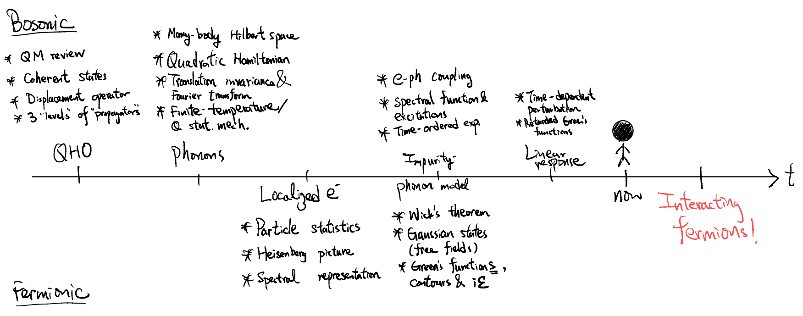
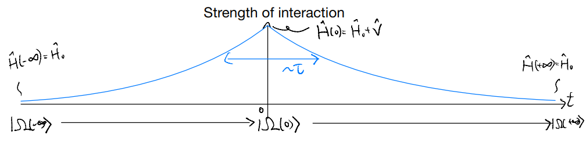
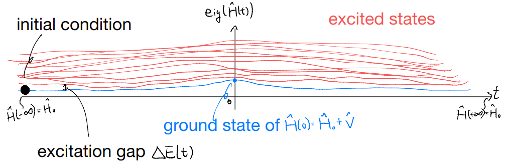

lec14
Contents
lec14¶
Note
This is NOT the official course PHYS5340 website yet!
If you are student in this course, always take the lecture notes as the correct one if you find any differences between lecture notes and website contents
If you are just passerby, use the materials below at your own risk. Since the website is still the first version (even alpha version), there could be some typos, incorrect/inaccurate/improper statements.
Note
All materials in this website are based on the course offered at HKUST
Note
As a “casual course”, we provide only general references but not specific ones to the materials introduced
Note
All materials’ copyright in this website are reserved for the course lecturer
If you want to use the material somewhere, you might need to contact the lecturer first
Note
Contribution is always welcome. if you find any typo, incorrect/inaccurate/improper statements or necessary references, do not hesitate to
raise an issue on github repo
make an pull request on github repo
contact me directly
20220323
Topics
Recap of what we have learnt
Adiabatic turning on, Gell-Mann-Low theorem
Primer into interacting electrons
Goals
Introducing many-body perturbation theory
Setting up methods for treating interacting electrons
Recap: what have we learnt so far?¶
Today happens to be the mid-way point of our course: let’s quickly recap what we’ve covered

Adiabatic turning on & Gell-Mann-Low Theorem¶
Suppose we have a Hamiltonian
where we view \(\hat{V}\) as a perturbation and \(\hat{H}_0\) defines the “unperturbed” problem. As the name suggests, we consider the scenario in which the unperturbed problem is solvable, such that we can attempt to systematically add the corrections from \(\hat{V}\) to our physical observables. The typical setup is that \(\hat{H}_0\) is a free theory (with Gaussian ground states), and \(\hat{V}\) is an interaction. We will refer to \(\hat{V}\) as the “interaction” as such.
One clever trick for developing such a perturbation theory is to imagine turning on the perturbation \(\hat{V}\) “slowly”. Imagine modifying our Hamiltonian into (in Schrodinger picture)
such that it interpolates from \(\hat{H}_0\) to \(\hat{H}=\hat{H}_0+\hat{V}\) as go from \(t=-\infty\) to \(t=0\), and interpolates back to \(\hat{H}_0\) as we further send \(t\to +\infty\)

Now, let us suppose we start with the ground state \(|\Omega_0\rangle\) of \(\hat{H}_0\) at \(t\to -\infty\). In the Schrodinger’s picture, the state evolve according to
with the initial value
We (probably) don’t know how to solve the time-evolution of the state exactly. If we knew, we could have solved \(\hat{H}\) directly! Instead, let us imagine plotting the many-body eigen-energies as a function of \(t\):

Suppose the excitation gap remains finite for all values of \(t\). This sets a timescale
The adiabatic theorem then states that, so long as the dynamics in \(\hat{H}(t)\) is slow compared to \(\tau_A\), i.e., \(\tau\gg \tau_A\), then our “black dot” stays in the lowest branch to good approximation.
Heuristically, this could be understood from energy considerations: to transit from the ground state to the excited state, we need to supply energy, In our setup, the only possible energy source is the dynamics in \(\hat{H}(t)\), with scale set by \(1/\tau\). If we keep that arbitrarily slow, i.e., take \(\tau\to \inf\infty\), then we are not giving energy to the system to make a transition to the excited states. In other words, we stay in the instantaneous ground state.
We caution that the adiabatic limit is tricky for two reasons
For a many-body system in the thermodynamic limit, there may be gapless excitations directly above the ground state. As such there is no reason to expect the adiabatic theorem to hold at all. However, one might imagine circumventing the difficulty by considering a finite system and taking the adiabatic limit first, before taking the thermodynamic limit. In practice, of course, these are subtle problems, and we will not address them carefully here.
More importantly, the interaction may be strong enough that a quantum phase transition occurs as we crank the interaction strength up to its full value. Such quantum phase transitions are characterized by a crossing of the energy levels as a function of the interpolation time \(t\). In that case, the adiabatic theorem also fails. And, indeed, one should not hope to get a satisfactory perturbation theory starting from a “wrong” \(\hat{H}_0\)!
Setting the subtleties aside, let us now consider taking expectation values (with a goal of finally computing some physical observables). We can choose to work in the Heisenberg picture of \(\hat{H}(t)\), and consider the time-ordered Green’s functions, i.e., quantities of the form
The motivation for specializing to time-ordered operators will be clear in a moment, and we consider times \(t_i\) which remain finite even as \(\tau\to\infty\), i.e., we stay near \(t=0\) in the adiabatic limit.
In the above, we take advantage of the fact that, in the Heisenberg picture, the state is stationary and all the time-dependence is assigned to the operators. One may for a moment revert back to the Schrodinger picture, supposing for simplicity that \(t_1>t_2>\cdots>t_n\) such that the time-ordering does nothing. The quantity we wrote down can be understood as
where \(\hat{U}_S\) is the time-evolution operator in the Schrodinger picture
In the adiabatic limit, for finite times \(t_i\), we have
where \(|\Omega\rangle\) denotes the many-body ground state of full Hamiltonian \(\hat{H}=\hat{H}_0+\hat{V}\). As such, we see that, in the adiabatic limit, we are simply computing some sort of correlation functions for the interacting ground state.
At the same time, we know that the “initial state”
is simply the ground state of the unperturbed Hamiltonian \(\hat{H}_0\). This connects the “hard problems” of interest (concerning the interacting system) to those in our “simple starting point”.
To show this more explicitly, we recall the interaction picture introduced in the last lecture. For our problem, it is natural to use \(\hat{H}_0\) to define the dynamics of the operators, such that the interaction-picture operators (for the full problem with adiabatic turning on) evolve in time according to the Heisenberg picture defined with respect to \(\hat{H}_0\). Starting from the reference time of \(t\to -\infty\), the quantum states evolve in the interaction picture according
where \(\hat{V}_I(t)\) is the interaction Hamiltonian (perturbation) in the interaction picture. The “S-matrix” is unitary and could be related to backward time evolution
Now, in computing observables we know that
where the state \(|\Omega_0\rangle\) doesn’t evolve in the Heisenberg picture. i.e., we have
Supposing for the moment that \(t_1>t_2>\cdots >t_n\), in the interaction picture we have
when the dust settles, we see that the final expression is independent on the initial time-ordering. In other words, even if the times were ordered differently in the beginning, we still get the same expression at the end. Importantly, all the insertion of the S-matrix can be lumped into a single one going \(-\infty\) to \(+\infty\). The time-ordering ensures that we break it down into pieces in the actual expression.
The only problem left is that what we have is not an “expectation value” with respect to a given state. This can be fixed by noticing that, in the adiabatic limit, the state \(|\Omega_0\rangle\) is both the initial and final state. Yet, in the interaction picture the states have to evolve, and so we can only reconcile the initial and final states up to a phase in the interaction picture:
In particular, the phase can be understood as the overlap
Altogether, we conclude
where
and the interaction-picture operators evolve according to the Heisenberg picture with respect to \(\hat{H}_0\). Furthermore, we end up with an expression involving only the ground-state expectation value of the unperturbed problem. This fulfills our promise of relating the interacting problem to the unperturbed one. The remaining task is “simply” to expand in powers \(\hat{V}_I\) and we would get a perturbation series!
Remark: the final expression obtained above is highly reminiscent of what we have learnt in statistics mechanics. Recall, for instance, that the average energy
This suggests that we can define
such that our expression can be simplified further into something like
this is the spirit of a generating functional (c.f. PS3). In any case, we see that a close parallel with statistics mechanics emerges.
Interacting electrons¶
Let us be brave and go straight now to a problem of interacting electrons. Consider a fermionic problem with the full Hamiltonian
where \(\hat{n}_x=\sum_{\sigma}{\hat{c}_{x\sigma}^{\dagger}\hat{c}_{x\sigma}}\) denotes the on-site density of the electrons. Notice that the interaction term is normal-ordered, such that
and the last line holds even if \(x=y\;\&\;\sigma=\sigma'\), in which case the term vanishes. This ensures
i.e., there is no interaction when we have zero or one electron.
Of course, it’s quite meaningless if we just state the Hamiltonian and leave it there. Let us attempt to evaluate some physical quantities, say the dielectric function. (The full problem is more complicated, with distinctions between longitudinal vs transverse response and DC versus AC etc. In the following, we only sketch a simplified version of the key points.)
Recall, in a medium the EM scalar potential is modified into
In momentum space, we have
The modification to the dielectric “constant” ( which is \(q\) dependent here) can also be understood as a modification of the “true” charge density in the medium, due to the screening from the system. I.e., we can consider
Comparing the two, we find
Now, within linear response, the screening charges appear as a response to the external potential
where
is the density-density response function (maybe up to the sign). This gives
So we could determine the dielectric function by evaluating the density-density response function! But, how do we relate that to the Gell-Mann-Low formula (and hence perturbation theory)?